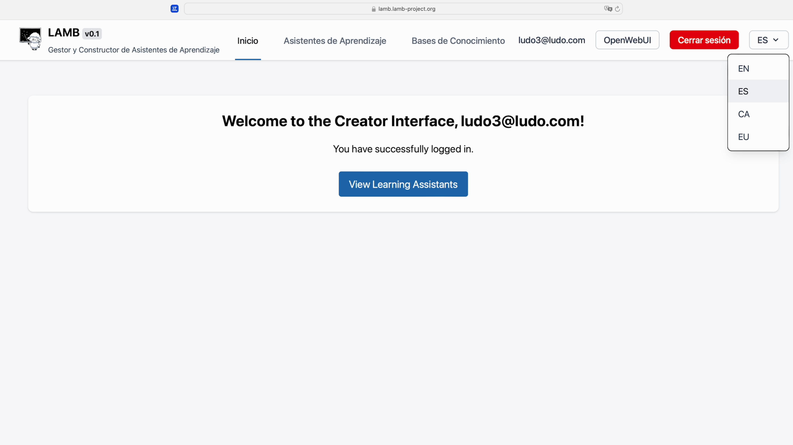
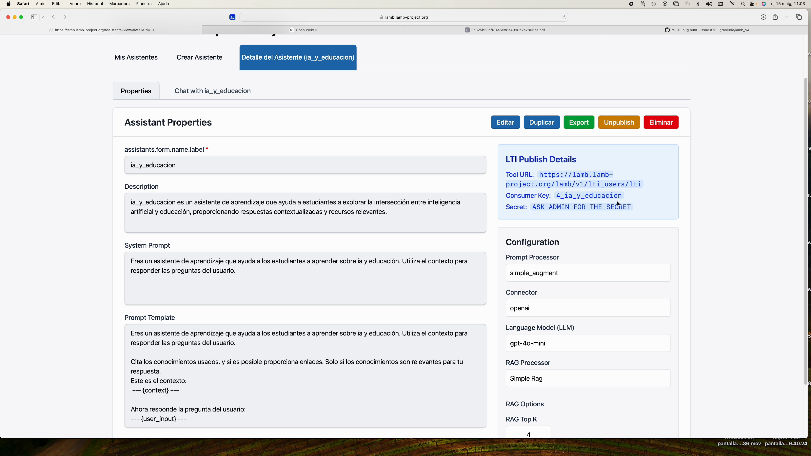
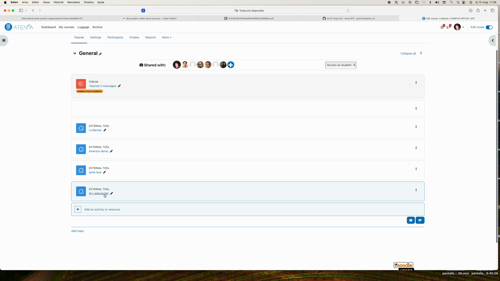

Quick LAMB Tutorial #
Goal: in less than 15 minutes you will have a learning assistant that uses your own documents and will be available within your Moodle course.
1. Registration and access #
- Go to
https://lamp.lamp-project.org. - Click Sign Up and complete the form (name, email, password, Secret Key provided by coordination).

2. Get to know the main dashboard #
Upon entering you will see three key sections:
- My Assistants – where your bots live.
- Knowledge Bases – your semantic bases.
- Open Web UI – the chat interface.

3. Create your first assistant #
- In My Assistants click New.
- Give it a name (e.g. Demo), describe its mission and choose the model (GPT-4o, Mistral, etc.).
- Save.

4. Quick assistant test #
Click on the chat icon to converse and check that it responds.

5. Create a knowledge base #
- Open Knowledge Bases ► New.
- Mark the base as Private and save.

 #
#
6. Document ingestion #
- Inside your base click Markdown Ingest (currently the most stable method).
- Drag PDFs, DOCX or
.mdfiles. - Keep Chunk size ≈ 2000 for long texts.

Tip: You can also upload .ZIP files as long as they contain .pdf, .docx, .txt or .md.

You can query the knowledge base directly:

7. Connect the base to your assistant #
- Go back to My Assistants and create an assistant.
- In the template look for the RAG section and choose the newly created base.
- Indicate how many chunks (
k = 3is usually enough).

- Test your assistant in OpenWebui.
8. Debug mode (optional but useful) #
Clone the assistant, change the model to Bypass and activate Simple RAG to see the complete prompt that LAMB sends to the LLM.

9. Publish your assistant as an LTI tool #
Publishing your LTI assistant will allow your students to access the assistant you have created from your course in Moodle or another LMS.
From the Assistant detail view click Publish.

Three pieces of data will be generated:
- Tool URL
- Consumer Key
- Shared Secret

10. Insert the assistant in Moodle (LTI 1.1) #
- In your course ► Add activity ► External Tool.
 2. Paste the Tool URL in Secure Tool URL.
3. Copy Consumer Key and Shared Secret.
4. Adjust Launch container ► New window.
5. Save.
2. Paste the Tool URL in Secure Tool URL.
3. Copy Consumer Key and Shared Secret.
4. Adjust Launch container ► New window.
5. Save.

11. Student view #
Students access from Moodle; they only see this bot and their chats are stored in LAMB, complying with the privacy policy.